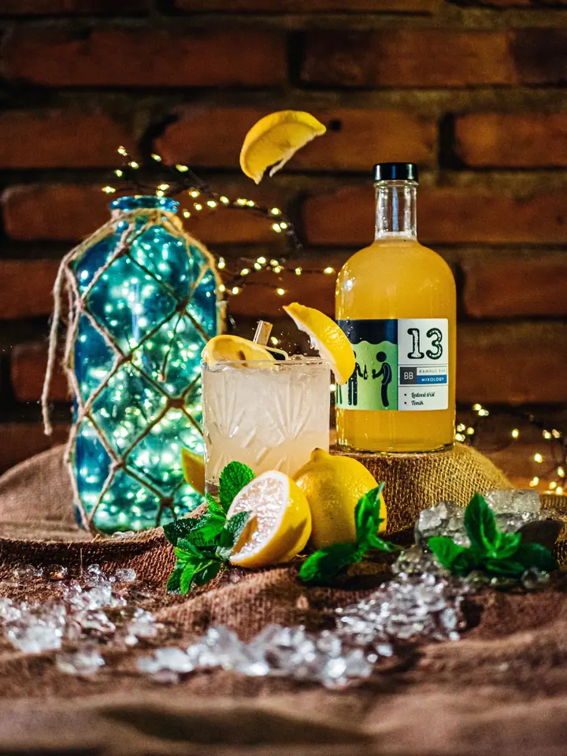
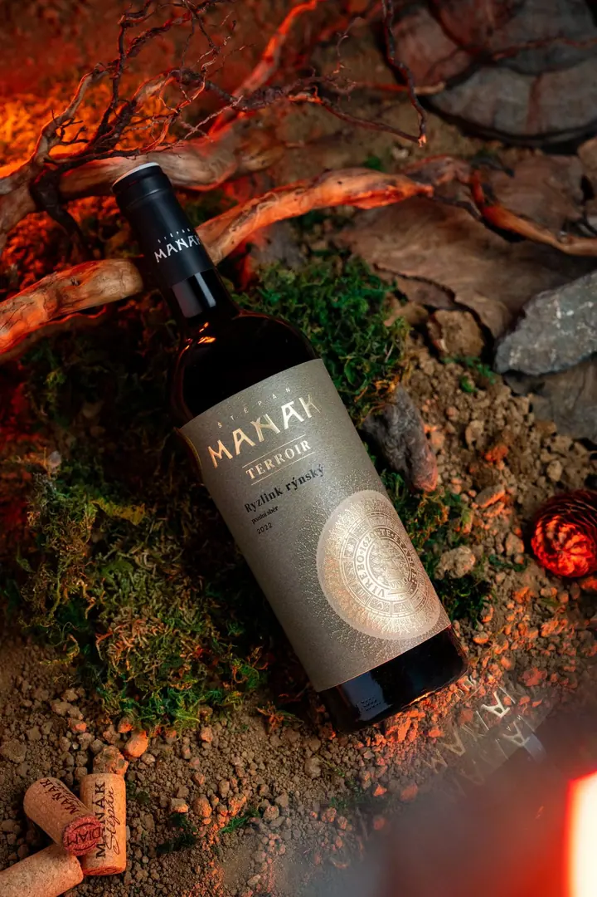
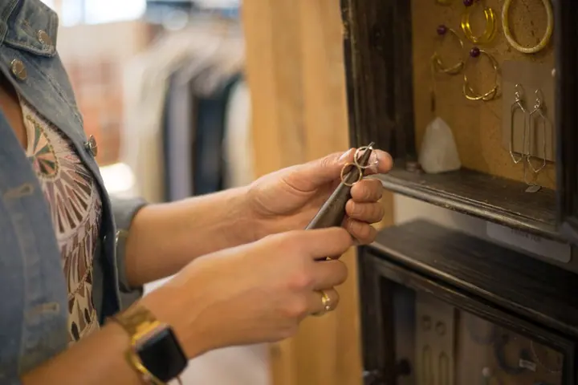
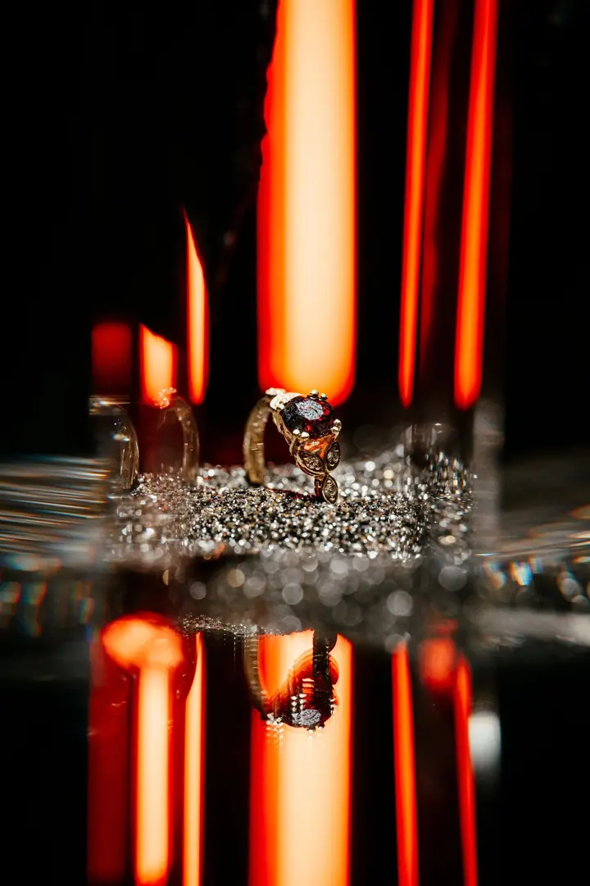
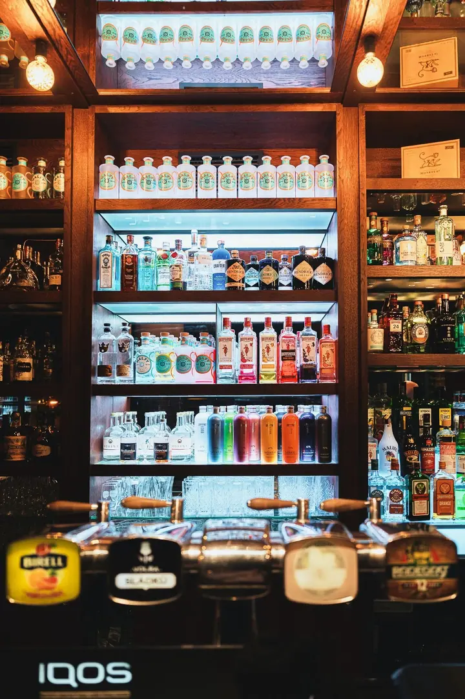

01 / 04
Produktová a reklamní fotografie
Fotím produkty tak, aby vynikla jejich textura, barvy i jedinečnost. Ráda vám pomohu s přípravou a stylingem snímků pro kampaně, web, tiskoviny i sociální sítě.
Zeptat se na termín→








Vizuál, který prodává vaši značku
Zeptat se na termín →(01) Ahoj
Jmenuji se Lucie Adamová a pod značkou Lucreations fotím a natáčím pro firmy, značky a realitní kanceláře v Brně a okolí. Tvořím produktové fotky , snímky interiérů i reklamní a firemní videa , které si vaše publikum zapamatuje.
(02) Co dělám
01 / 04
Fotím produkty tak, aby vynikla jejich textura, barvy i jedinečnost. Ráda vám pomohu s přípravou a stylingem snímků pro kampaně, web, tiskoviny i sociální sítě.
Zeptat se na termín→02 / 04
Fotím a natáčím interiéry bytů, domů, hotelů i komerčních prostor. Díky péči o detail a práci se světlem bude vaše nabídka na realitním trhu působit přitažlivěji.
Zeptat se na termín→03 / 04
Nafotím portréty zaměstnanců, firemní akce i pracovní prostředí. Fotky využijete na webu, v prezentacích, na sociálních sítích i při PR.
Zeptat se na termín→Dále nabízím
Natočím krátký spot na sociální sítě, prezentační video na web, produktové video nebo vizuální příběh značky. Postarám se o kompletní postprodukci včetně licencované hudby, titulků a voice-overu.
↗(04) Postup
Od první zprávy po hotovou galerii.
Krok 1 z 4
Projdeme spolu vaše představy a cíl. Když ještě nemáte konkrétní nápad, navrhnu koncept, vizuální styl a u videa i scénář.
Krok 2 z 4
Domluvíme lokaci, rozsah a termín. U produktů vám ráda pomohu s přípravou a stylingem jednotlivých záběrů.
Krok 3 z 4
Obvykle počítám s hodinovým nebo půldenním blokem. Můžete být u toho a doladit výsledek přímo na místě, nebo nechat vše na mně.
Krok 4 z 4
Vyberu a upravím nejlepší snímky, obvykle je dodávám do jednoho až dvou týdnů. Menší videa zvládám většinou do týdne.
Silný vizuál je klíčem k úspěchu.
(05) Za objektivem
Můj příběh je o neustálém hledání, experimentování a zdokonalování. Během studia na SAE Institute v Athénách jsem objevila, jakou moc má dobře vytvořené video, a od té chvíle jsem věděla, že tohle je cesta, kterou chci jít.
Natáčela jsem surfové zážitky na řeckých plážích, taneční workshopy, luxusní promo na Mykonu i svatební momenty. Po návratu do Česka jsem začala spolupracovat s realitními společnostmi, bary, restauracemi, klenotnictvími i technologickými firmami.
Pracuji pro podnikatele, provozovatele kaváren a restaurací, brand manažery i markeťáky. Pro ty, kdo nechtějí jen „nějaké fotky“ nebo „nějaké video“, ale vizuál, který jejich značku odliší od konkurence.
Lucie
Lucie Adamová · Reklamní fotografka a video produkce
Nevadí. Ráda s vámi projdu vaše představy a navrhnu koncept. Společně dáme dohromady styl a postarám se o celý průběh realizace.
Obvykle počítám s hodinovým nebo půldenním blokem. Hotové upravené fotografie dodávám do jednoho až dvou týdnů.
Cena se odvíjí od typu a rozsahu zakázky, délky focení či natáčení a náročnosti postprodukce. Ráda vám připravím nezávaznou nabídku na míru.
Pokud budete chtít, připravím z hlavního videa i Reels, Stories nebo čtvercové verze. Standardně ale nejsou součástí hlavních výstupů.
Působím převážně na jižní Moravě, ale po dohodě se ráda domluvím i na focení nebo natáčení v jiných městech.
(07) Kontakt
Napište pár vět o tom, co si představujete, a termín, který se vám hodí.